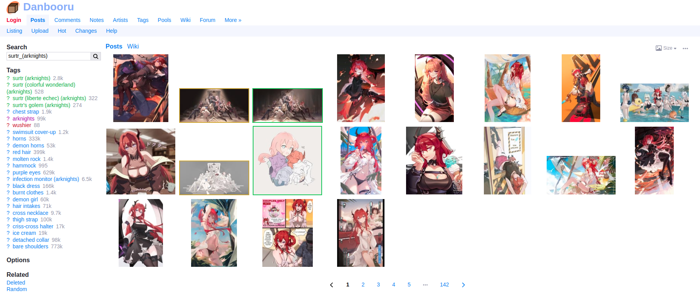
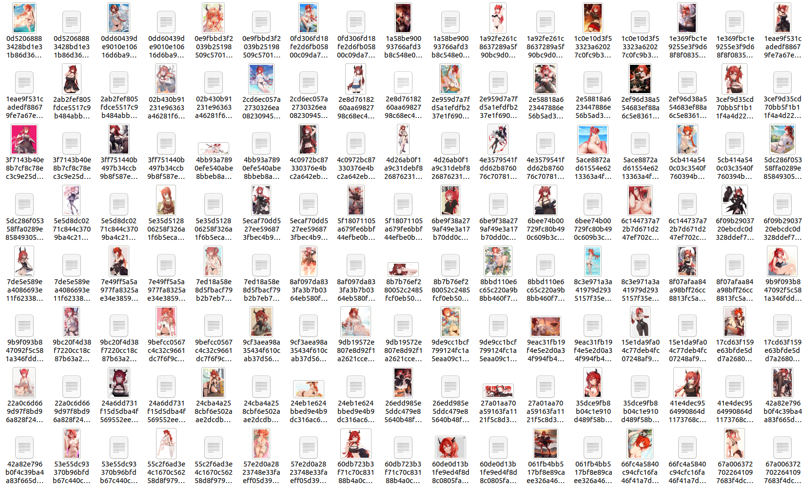
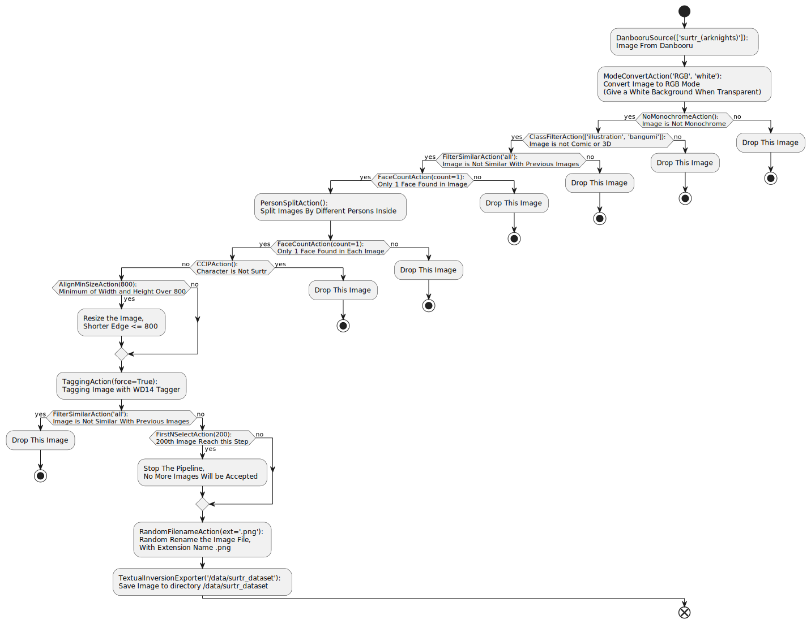

Training a LoRA for My Waifu
(Chinese Doc：https://deepghs.github.io/waifuc/main/tutorials-CN/quick_start/index.html )
Before we dive in, please note the following:
You should have Python installed and a basic understanding of Python. For Python tutorials, you can refer to https://python.swaroopch.com/.
Complete the installation of the waifuc library. Check out the installation guide here.
What Should I Do?
First, get to know your waifu, especially her name and origin. For example, my waifu is the beautiful demon girl with red hair named Surtr from the mobile game Arknights.
Find her on an image website and note the search keywords. For Surtr, you can use the tag
surtr_(arknights)on Danbooru to find her images.Save the following code in a file named
crawl.py:1from waifuc.action import NoMonochromeAction, FilterSimilarAction, \ 2 TaggingAction, PersonSplitAction, FaceCountAction, FirstNSelectAction, \ 3 CCIPAction, ModeConvertAction, ClassFilterAction, RandomFilenameAction, AlignMinSizeAction 4from waifuc.export import TextualInversionExporter 5from waifuc.source import DanbooruSource 6 7if __name__ == '__main__': 8 # put your tag here, e.g., surtr_(arknights) 9 s = DanbooruSource(['surtr_(arknights)']) 10 11 # crawl images, process them, and then save them to a directory with the given format 12 s.attach( 13 # preprocess images with a white background RGB 14 ModeConvertAction('RGB', 'white'), 15 16 # pre-filtering for images 17 NoMonochromeAction(), # no monochrome, greyscale or sketch 18 ClassFilterAction(['illustration', 'bangumi']), # no comic or 3d images 19 FilterSimilarAction('all'), # filter duplicated images 20 21 # human processing 22 FaceCountAction(count=1), # drop images with 0 or >1 faces 23 PersonSplitAction(), # crop for each person 24 FaceCountAction(count=1), 25 26 # CCIP, filter the character you may not want to see in the dataset 27 CCIPAction(), 28 29 # if min(height, weight) > 800, resize it to 800 30 AlignMinSizeAction(800), 31 32 # tagging with wd14 v2, if you don't need a character tag, set character_threshold=1.01 33 TaggingAction(force=True), 34 35 FilterSimilarAction('all'), # filter again 36 FirstNSelectAction(200), # when the 200th images reach this step, stop this pipeline 37 RandomFilenameAction(ext='.png'), # random rename files 38 ).export( 39 # save to /data/surtr_dataset directory 40 # you can change it to your directory 41 TextualInversionExporter('/data/surtr_dataset') 42 )
Run the following command to execute the code:
python crawl.pyAfter running the code, open the
/data/surtr_datasetfolder to find surtr’s training dataset. It contains 200 images, each with a corresponding txt file for tags.Congratulations! You can now use the
/data/surtr_datasetfolder for LoRA training. 🎉
How Does the Code Work?
In the provided code, we’ve constructed a comprehensive pipeline using waifuc, encompassing three main components, which are also the primary modules of waifuc:
Data Source (Source): Responsible for loading data into the pipeline.
DanbooruSource: Used to crawl images from the Danbooru website and load them into the pipeline. In this example, we perform image retrieval on Danbooru using the tagsurtr_(arknights).
Data Processing (Action): Processes the loaded image data.
ModeConvertAction: Converts image formats; in this example, it converts to the RGB format and adds a white background to transparent images.NoMonochromeAction: Filters monochrome images (greyscale, line art, monochrome comics, etc.).ClassFilterAction: Filters specified types of images; in this example, it retains only `illustration` (illustrations) and `bangumi` (anime screenshots), while comic (comics) and 3D (3D images like those from Koikatsu and MikuMikuDance) are filtered out.FilterSimilarAction: Filters similar images to prevent duplicate images from entering the dataset.FaceCountAction: Filters images based on the number of faces; in this example, it keeps only images with exactly one face and filters out images with no faces or multiple faces.PersonSplitAction: Splits images to isolate individual characters within the picture.CCIPAction: Filters out irrelevant characters introduced into the pipeline; in this example, images of characters other than Surtr are filtered out.AlignMinSizeAction: Compresses oversized images; in this example, it resizes images with a short side longer than 800 pixels to ensure the short side does not exceed 800 pixels.TaggingAction: Applies tagging to images using wd14v2 tagger; in this example, as the images are sourced from Danbooru, which already includes tag information, setting force to True instructs the tagger to reapply tags.FirstNSelectAction: Retains only the first several images; when the number of images reaching this step reaches the set quantity (200 in this example), the pipeline terminates further crawling and processing.RandomFilenameAction: Randomly renames images and uses.pngas the file extension when saving.
Data Export (Exporter): Exports the processed data.
TextualInversionExporter: Exports the processed data in the format of images and txt labels to the specified path (/data/surtr_datasetin this case).
The overall process is illustrated below:
Building upon this foundation, you can:
Replace the data source to crawl data from other websites. We support various data sources for different websites, including Pixiv, Sankaku, Rule34, AnimePictures, Zerochan, Konachan, Duitang, Huashi6, and more.
If you have images in your local folder, you can use
LocalSourceto load them into the pipeline for processing.Add or remove Actions to modify the data filtering and processing flow.
Replace the Exporter to save images in different formats to meet diverse data usage requirements.
The comprehensive workflow is presented above. This flexible and customizable structure allows you to adapt the pipeline to various scenarios.
Good News!
After reviewing the example, you may notice that the pipeline requires finding character tags on image websites before loading data into the pipeline. This process seems cumbersome, requiring manual user intervention.
The good news is, we’ve partially solved this problem! You can now input the character’s name directly (in Chinese, Japanese, or English), and the pipeline will automatically generate data sources from various websites for data crawling.
To use this feature, install the additional dependency:
pip install git+https://github.com/deepghs/waifuc.git@main#egg=waifuc[gchar]
This library, gchar, contains a pre-built character database with character tables for several mobile games and corresponding tags on various image websites. It currently supports limited games, including Genshin Impact, Arknights, Azur Lane, Blue Archive, Girls’ Front-Line, and more. All the supported games are listed here.
Replace s = DanbooruSource(['surtr_(arknights)']) with s = GcharAutoSource('surtr') in the code to automatically select the most suitable data source for your character. The full code looks like this:
1from waifuc.action import NoMonochromeAction, FilterSimilarAction, \
2 PersonSplitAction, TaggingAction, FaceCountAction, FirstNSelectAction, \
3 CCIPAction, ModeConvertAction, ClassFilterAction, RandomFilenameAction, AlignMinSizeAction
4from waifuc.export import TextualInversionExporter
5from waifuc.source import GcharAutoSource
6
7if __name__ == '__main__':
8 # data source for surtr in arknights, images from many sites will be crawled
9 # all supported games and sites can be found at
10 # https://narugo1992.github.io/gchar/main/best_practice/supported/index.html#supported-games-and-sites
11 # ATTENTION: GcharAutoSource required `git+https://github.com/deepghs/waifuc.git@main#egg=waifuc[gchar]`
12 s = GcharAutoSource('surtr')
13
14 # crawl images, process them, and then save them to a directory with given format
15 s.attach(
16 # preprocess images with white background RGB
17 ModeConvertAction('RGB', 'white'),
18
19 # pre-filtering for images
20 NoMonochromeAction(), # no monochrome, greyscale or sketch
21 ClassFilterAction(['illustration', 'bangumi']), # no comic or 3d images
22 FilterSimilarAction('all'), # filter duplicated images
23
24 # human processing
25 FaceCountAction(count=1), # drop images with 0 or >1 faces
26 PersonSplitAction(), # crop for each person
27 FaceCountAction(count=1),
28
29 # CCIP, filter the character you may not want to see in dataset
30 CCIPAction(),
31
32 # if min(height, weight) > 800, resize it to 800
33 AlignMinSizeAction(800),
34
35 # tagging with wd14 v2, if you don't need character tag, set character_threshold=1.01
36 TaggingAction(force=True),
37
38 FilterSimilarAction('all'), # filter again
39 FirstNSelectAction(200), # when the 200th images reach this step, stop this pipeline
40 RandomFilenameAction(ext='.png'), # random rename files
41 ).export(
42 # save to /data/surtr_dataset directory
43 # you can change it to your own directory
44 TextualInversionExporter('/data/surtr_dataset')
45 )
Now you can enjoy automatic data source selection for data crawling. Happy training! 🚀